承运商运营管理
原项目包含运单、车辆、司机、保险、保养与统计等业务模块。
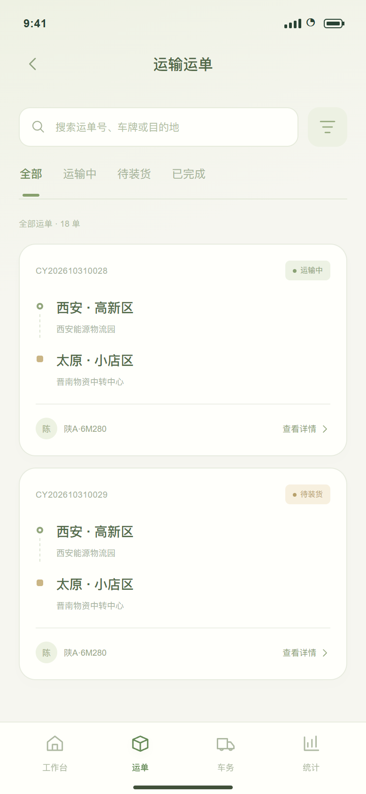
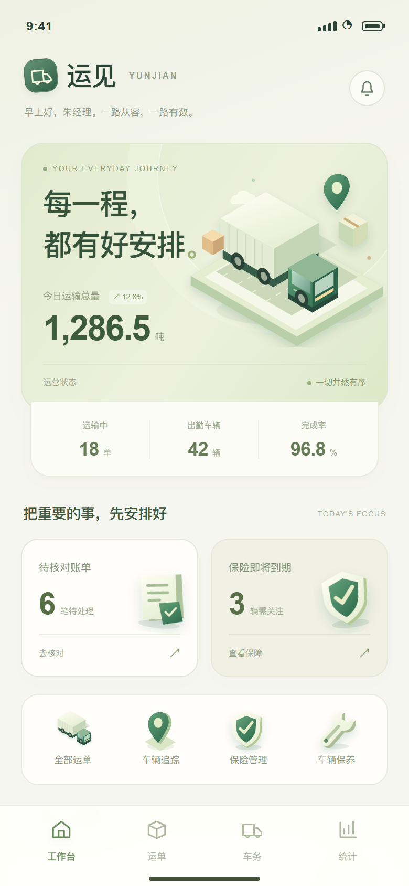
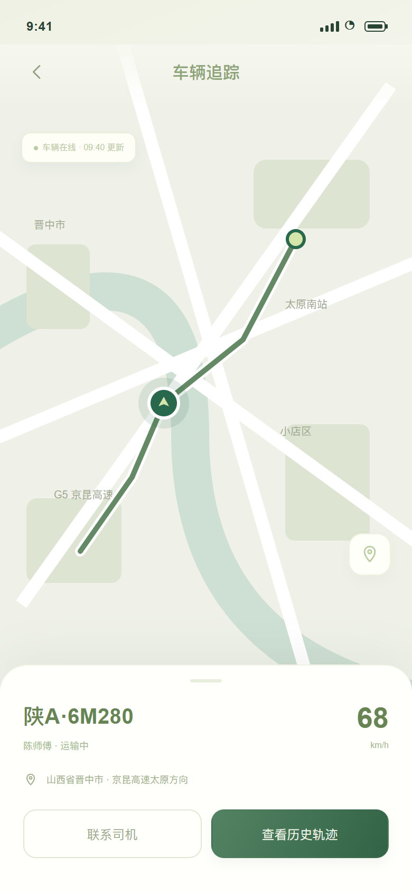
承运商每天面对的是一串相互关联的任务：确认在途车辆、核对运费、处理即将到期的保险。本次改版将功能集合整理成围绕任务的工作台。
原项目包含运单、车辆、司机、保险、保养与统计等业务模块。
原项目负责界面与交互设计，并参与部分需求与原型；本次独立完成体验重设计及原型。
聚焦运输、对账、车务三条任务链，展示关键状态与操作反馈。
从原有页面走查中归纳三类优化机会，让视觉层级与操作顺序共同服务业务。
首页优先呈现运输概况、待对账与保险临期；次级功能收进稳定入口。
信息优先级 → 行动入口把运单、车辆位置与历史轨迹连接；把风险提醒直接连接到续保表单。
发现问题 → 定位 → 处理费用拆解、必填校验、提交前确认及成功反馈，降低重要操作的歧义。
填写 → 校验 → 确认 → 反馈以 2.5D 运输场景建立品牌记忆；数据底座、待办卡片与轻量工具区形成不同层次。重要数字与状态保持独立分组。
运输总量独立突出；在途单量、出勤车辆与完成率收进次级数据底座，避免平铺。
待对账和临期风险提供明确数量，点击即可进入对应处理流程。
路线、车牌与运输状态组合为一个业务单元，减少跨模块寻找。
2.5D 小景与立体图标，
让业务界面有自己的表情。
列表负责找单，详情解释进度，地图定位车辆，回放还原过程。四个页面承接同一个运输任务。
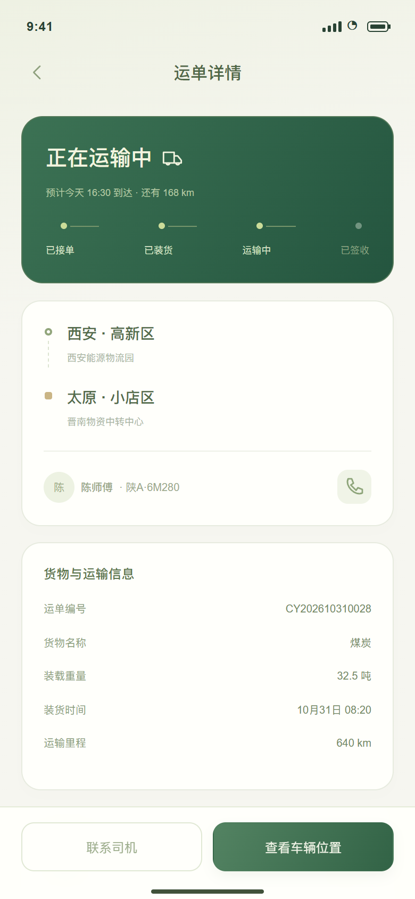
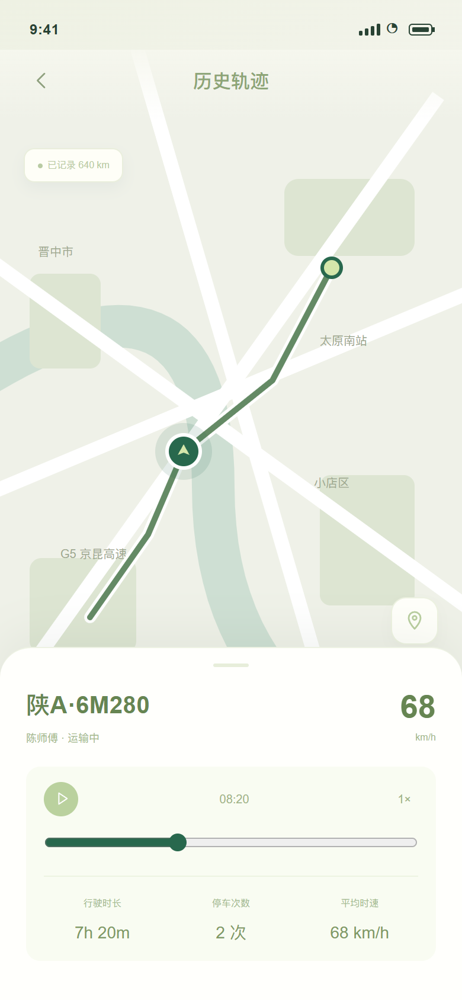
状态切换、搜索与筛选，缩小信息范围。
进度节点、起终点与车辆信息集中呈现。
地图和底部信息卡共同表达在途状态。
播放、暂停、拖动进度，按过程查看轨迹。
财务与车务操作都需要“看清楚再提交”。费用拆分说明计算过程，表单校验明确问题位置，二次确认给用户检查机会。
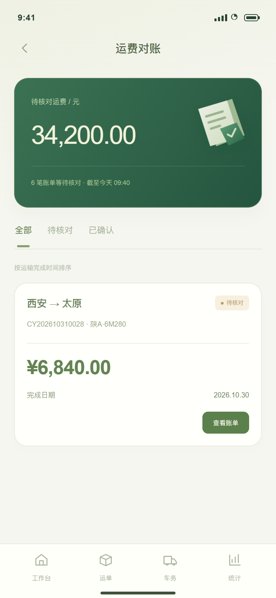
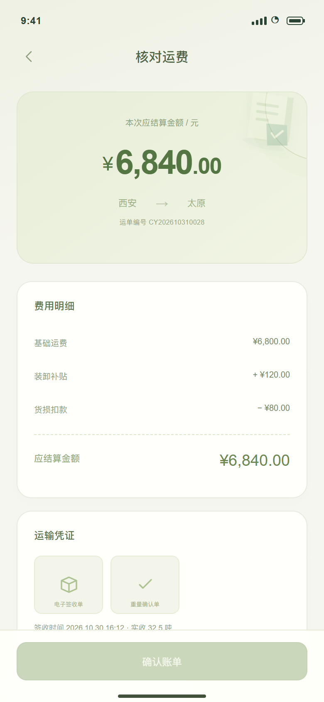
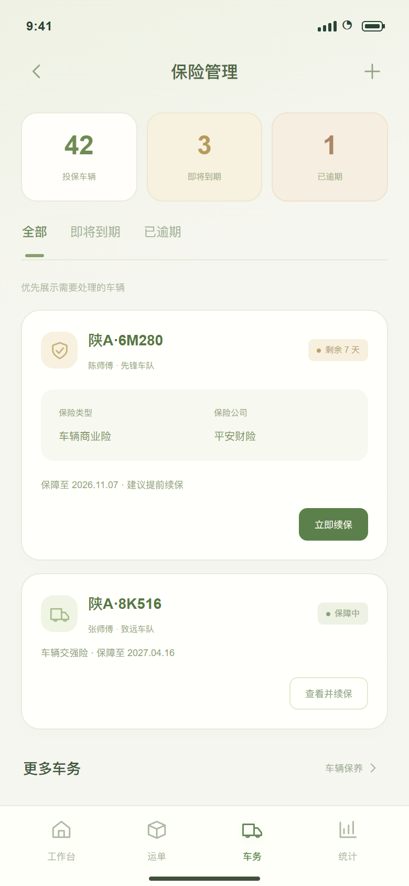
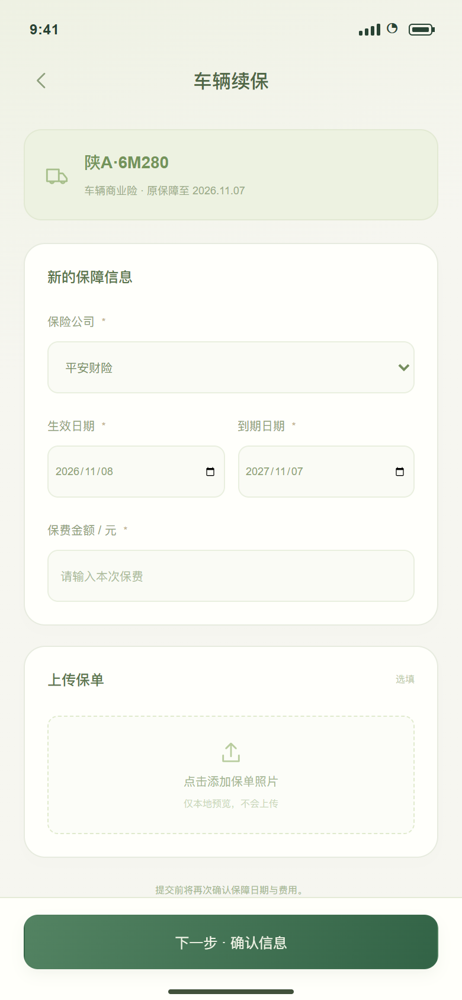
基础运费、补贴与扣款逐项呈现；勾选核对后才允许确认账单。
保费缺失、日期错误在字段旁提示；提交后更新列表状态，形成完整闭环。
苔绿与暖白构成安静的底色，奶油金点亮风险提醒。立体图形负责识别与亲和，数据、标签与操作保持清晰的视觉优先级。
标题 28–40 / 正文 13–15 / 辅助信息 10–12
8pt 间距基准 · 16–24px 卡片圆角
同一视角、柔和光影与材质配色形成家族感。场景用于品牌识别，立体图标用于入口识别；线性图标负责导航与操作。
请填写大于 0 的有效金额
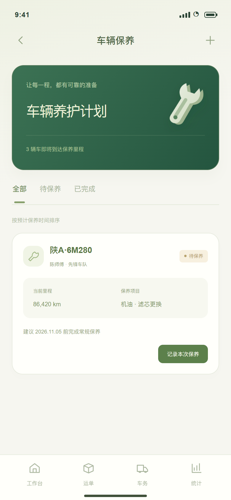
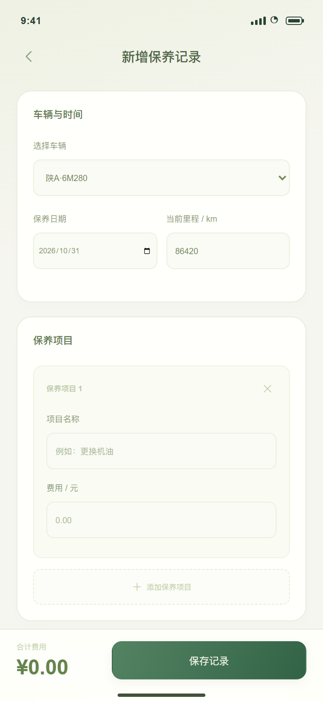
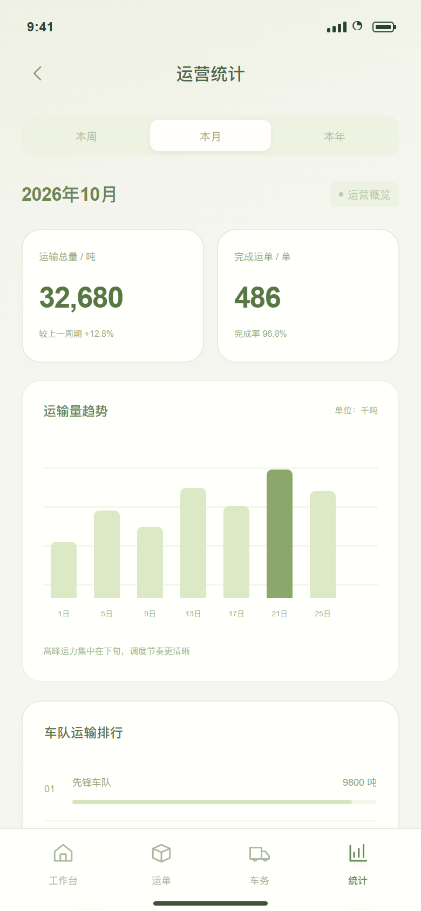
从运输可视，到费用可信，再到车辆保障。
以清晰的视觉和连续的交互，回应真实的运营任务。